Get started
Install the panel
You need EffectCraft 0.24.1 or later, installed in C:\Program Files\ArtCraft\EffectCraft by default. The plug-in is the plug-in folder inside this project.
-
Open the Effect menu
Choose Effect → Install Effect Plug-in Bundle (Folder)…. Pick this item, not plain Install Effect Plug-in…; that one expects a single
.wasmfile.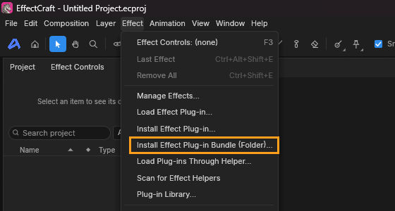
The Effect menu. The highlighted item installs a whole folder. -
Select the
plug-infolderGo to the
Duik for EffectCraftfolder of your download. Click the plug-in folder 1 once, then click Select Folder 2. Select the folder itself; don't open it and pick the.jsxfile.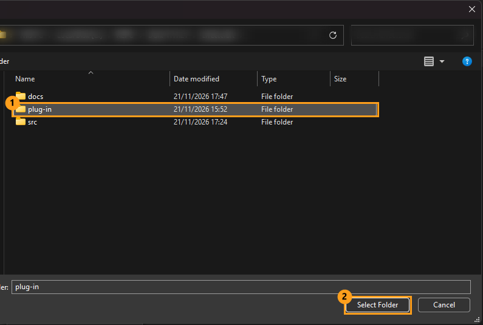
The folder picker. docsandsrcare not plug-ins; chooseplug-in. -
Open the panel from the Window menu
Choose Window → Duik for EffectCraft.jsx. It's near the bottom, with the other script panels.
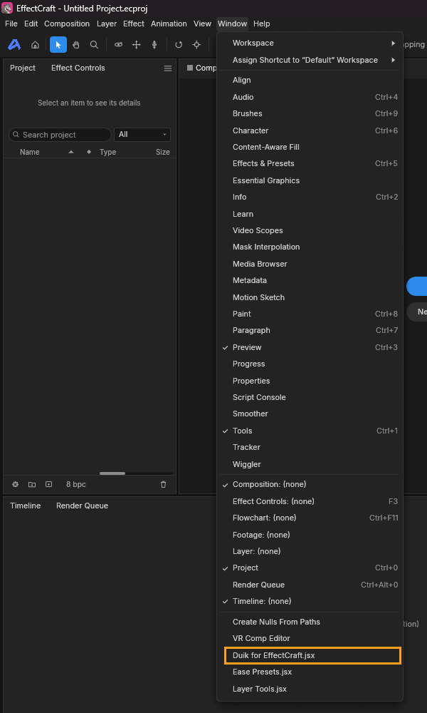
Script panels are listed at the end of the Window menu. -
Dock it and open a composition
The panel opens as a dockable panel. EffectCraft reopens it the next time you start the app. Create or open a composition before clicking any tool: every tool works on the active composition.
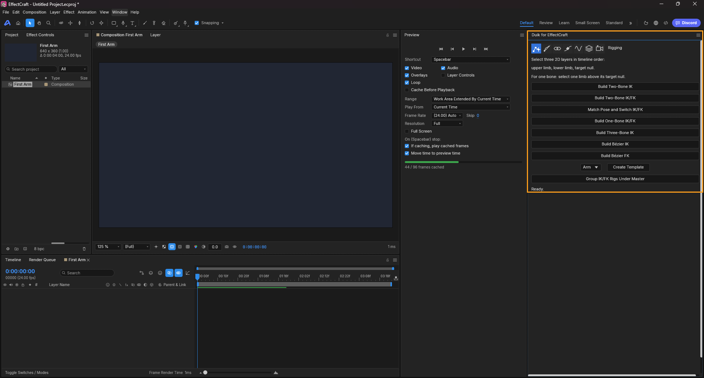
The panel docked on the right of the Default workspace.
It worked if the panel shows a row of seven icons and the word Rigging next to them, with Ready. under the buttons.
Updating to a newer build
EffectCraft won't overwrite a panel that's already installed. Delete %APPDATA%\EffectCraft\Scripts\ScriptUI Panels\Duik for EffectCraft.jsx, restart EffectCraft, then install again. Developers: run Build-Bundle.ps1 first after editing files in src\.
Do I need a .wasm file, After Effects, or Duik itself?
No. The bundle is one script panel. It builds native EffectCraft layers, effect controls, and expressions. It doesn't run After Effects, can't open existing Duik rigs, and doesn't use .ffx presets.
Panel tour
The panel has seven sections. Switch between them with the icon bar at the top. Hover an icon to see its name; the current section's name also shows beside the icons.
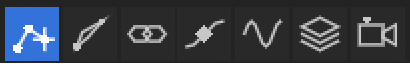
- Rigging: IK limbs and body-part templates
- Armature: bones from artwork, binding, follow
- Constraints: connector, effector, lock, pins
- Animation: easing, tweening, key cleanup
- Automation: wiggle, spring, loop, wheel, bake
- Layers: controllers, zero parents, rename
- Camera: 2D parallax camera, 3D camera rig
Read the status line. Every section has a message under its buttons. After each click it says what happened, such as Arm ready. Bind artwork to its bones; animate Arm - Wrist., or what to select instead.
Five key ideas
Most "nothing happened" moments come from one of these. Read them once before the guides.
- 1. Order means timeline order
- "Top" and "root to tip" refer to layer order in the timeline. Click order and canvas position don't matter.
- 2. Layers, properties, or keys
- Some tools want selected layers. Others want a selected property (such as Position) or selected keyframes. The reference says which.
- 3. Set the pivot first
- A limb rotates around its Anchor Point. Put it on the joint (shoulder, elbow) before you build a rig.
- 4. Build in the rest pose
- Tools measure lengths and angles at the current frame. Build with the character in its neutral pose.
- 5. Animate the controller
- Rigs drive layers with expressions. Keyframe the target or bone null, not the layers it drives.
- Null
- An invisible layer with a transform. Used as a bone, target, or controller.
- IK (inverse kinematics)
- Move the hand; the elbow works out its own bend.
- FK (forward kinematics)
- Rotate each joint yourself; children follow.
- Expression
- A formula on a property. Saved in your
.ecproj.
Guides
Guide 1: Rig an arm with IK
You'll make a two-bone arm, attach artwork, and animate it by moving only the wrist. The example uses simple shape layers: a body, an upper arm, and a forearm with a hand.
-
Create the arm template
Make a new composition. 1920 × 1080 works well: the template scales to the comp, so null outlines stay small next to the art. In the panel, open Rigging, leave the dropdown on Arm, and click Create Template 1.
Three nulls appear 2: Arm - Shoulder and Arm - Elbow are bones; Arm - Wrist is the target you'll animate.
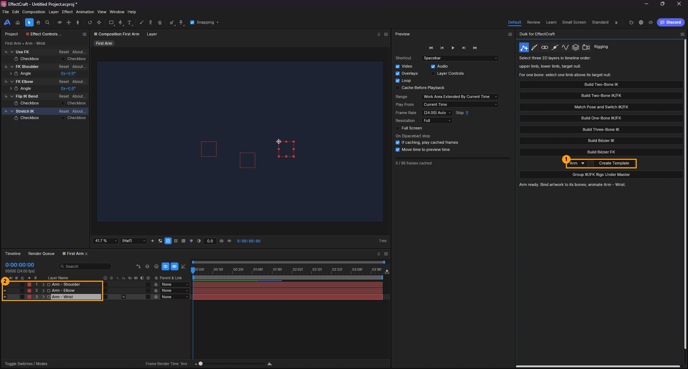
The template nulls are invisible in renders. Their outlines show in the viewer while selected. -
Add artwork over the bones
Add one layer for the upper arm (shoulder to elbow) and one for the forearm (elbow to wrist). Put each layer's Anchor Point exactly on its joint: the upper arm's on the shoulder null, the forearm's on the elbow null.
Tip: give each limb a rounded end centred on its joint. The pieces then overlap cleanly at any elbow angle, with no gap or corner showing.
Keep both art layers unlocked, unparented, and 2D, with no keyframes or expressions on their transforms. Place them below the nulls in the timeline.
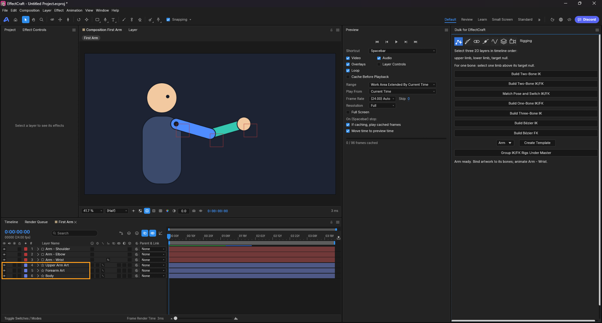
Joint dots sit exactly on the Shoulder and Elbow nulls. The Body layer stays unbound: it doesn't move with the arm. -
Bind each piece to its bone
Open the Armature tab. Select Arm - Shoulder and Upper Arm Art, then click Bind Artwork to Bone 1. Then select Arm - Elbow and Forearm Art and click it again.
The Parent & Link column 2 now shows each art layer parented to its bone. The artwork doesn't move.
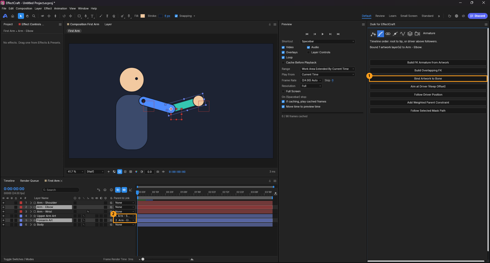
Status line: Bound 1 artwork layer(s) to Arm - Elbow. -
Animate the wrist
Select Arm - Wrist. Add a Position keyframe at frame 0. Go to 1 second and drag the wrist to a new spot; a second key is added. Scrub the timeline.
The Effect Controls panel 1 shows the rig's switches. Leave Use FK off for now. The wrist's keyframes 2 drive the whole arm.
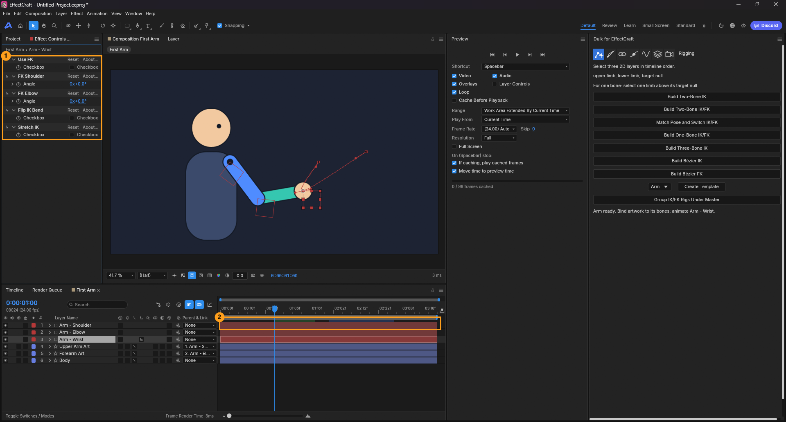
At 1 second the elbow bends so the forearm tip meets the wrist target.
It worked if the elbow bends by itself as you move the wrist, and both art layers follow.
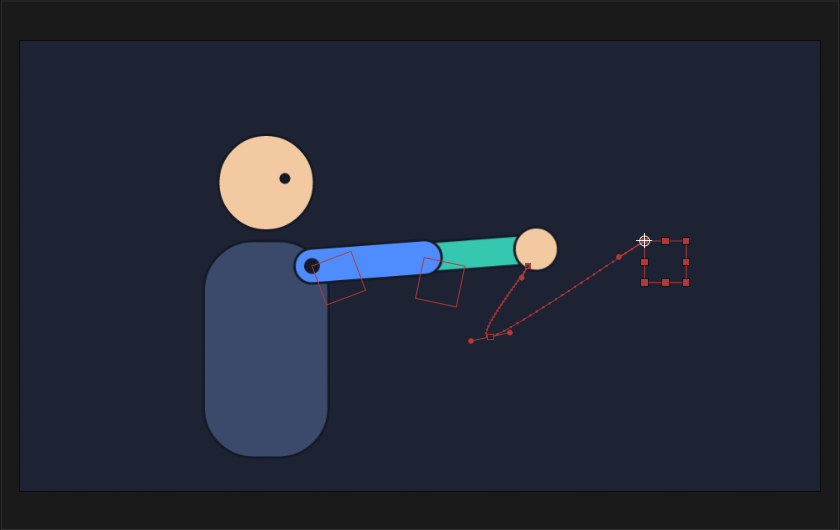
Try next
- Reverse the bend: tick Flip IK Bend on the wrist.
- Switch to FK without a jump: at a frame where the arm is within reach, select the three template nulls and click Rigging → Match Pose and Switch IK/FK. Then animate FK Shoulder and FK Elbow.
- Legs: same steps, choose Leg. The nulls are Hip, Knee, and Ankle.
- Your own artwork order: see Build Two-Bone IK to rig existing limb layers without a template.
Guide 2: Floppy tail with overlap
You'll turn five art segments into a chain that swings with follow-through, while animating only one rotation.
-
Lay out the segments
Make 2–16 layers in a row, such as Tail 1 to Tail 5. Set each Anchor Point at the end nearest the body, exactly where it meets the previous segment. Taper them toward the tip and round their ends so the joints stay smooth. In the timeline, order them root to tip: Tail 1 highest. Leave the body layer unselected.
-
Build the chain
Select all segments. In Armature, click Build Overlapping FK 1. A bone null is created for each segment, parented in a chain.
-
Animate the root bone
Select Bone - Tail 1. Keyframe its Rotation: −30° at 0 s, 20° at 1 s, −30° at 2 s. In Effect Controls 2, set Delay Frames to 3. Leave Overlap Amount at 100.
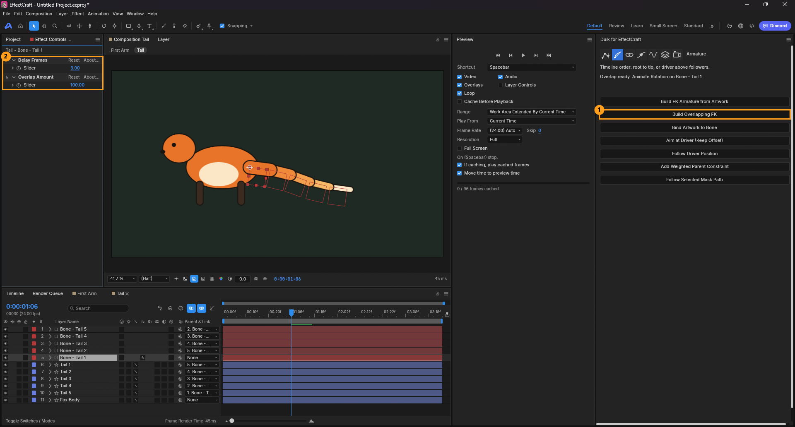
Mid-swing, each segment trails the one before it.
It worked if the tip lags behind the base when you scrub. Set Overlap Amount to 0 to compare with stiff FK.
For a tail without artwork yet, use Rigging → Tail (or Hair) → Create Template. Then bind artwork to each bone, as in Guide 1.
Guide 3: Fade a layer with a slider
The Connector lets one property play another property's keyframes. Here a null's X position controls a fade.
-
Make the animation to control
On an art layer (here Ghost), add two Opacity keys: 0% then 100%. Timing doesn't matter; only the first and last key values do.
-
Pick the driver
Add a null named Fader at the left end of a slider track (here X = 640). Parent a knob shape to it so you can see it. In the timeline, select the Fader's Position property (not the layer). Open Constraints and click Set Driver 1. The label changes to Fader › Position. Leave the axis on X.
-
Set the range and connect
Type the track ends: 640 in From and 1280 in To 2. Select only Ghost's Opacity property, then click Connect Keys to Driver 3.
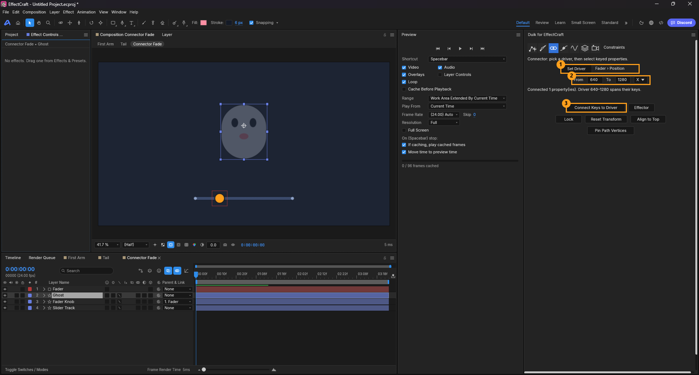
Status line: Connected 1 property(ies). Driver 640–1280 spans their keys. -
Drag the Fader
Drag Fader along the track. At the left end (X = 640) Ghost is invisible; at the right end (X = 1280) it's fully visible. Past either end, the value stays at that end.
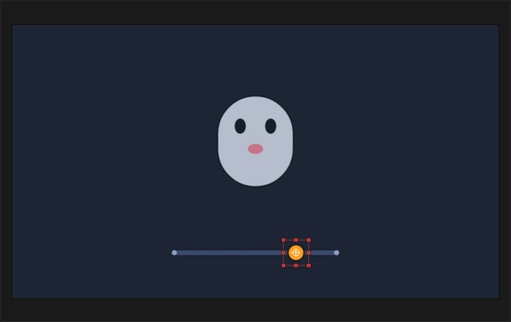
Fader at X = 1120, three-quarters along: Ghost is at 75% opacity.
Use it for facial expressions, hand poses, or any keyed motion you want on one dial. A slider effect or angle control works as the driver too.
Guide 4: Parallax with a 2D camera
-
Select the scene layers
Build a flat scene in layers, such as sun, clouds, mountains, hills, and a tree. Select all of them. They must be 2D and unparented.
-
Add the camera
In Camera, click Add 2D Camera 1. A 2D Camera null is added. Its Effect Controls show Zoom 2.
-
Set each layer's depth
Each scene layer now has a Camera Depth control. Use 100 for the foreground (moves fully), lower values further back. The example uses Tree 100, Hills 65, Mountains 35, Clouds 20, Sun 5.
-
Animate the camera
Keyframe the 2D Camera's Position, Rotation, or Zoom.
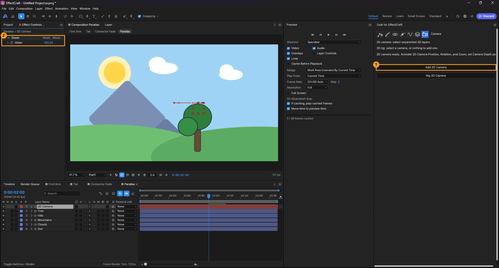
Mid-move: the tree shifts the most, the mountains less, and the sun barely moves.
It worked if near layers slide faster than far layers when the camera moves.
Reference
Rigging
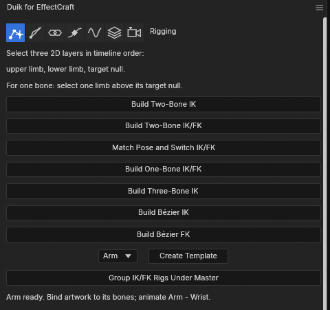
For custom rigs, use unlocked, unparented 2D layers. Order them root to tip in the timeline, followed by the nulls each tool asks for. Set pivots and target positions first.
| Button | Select first | Then animate |
|---|---|---|
| Create Template | Nothing. Choose a part in the dropdown. | Arm/Leg: wrist or ankle Position (two-bone IK/FK). Spine (5 bones), Tail (5), Hair (4): bone Rotation. Tail and Hair have Delay Frames and Overlap Amount on the root. |
| Build Two-Bone IK | Upper limb, lower limb, target null. Anchors at shoulder and elbow; target at the tip. | Target Position. Upper limb Position moves the shoulder. The starting elbow side sets the bend. |
| Build Two-Bone IK/FK | Same as above. | IK: target Position. With Use FK on: FK Shoulder and FK Elbow. Also has Flip IK Bend and Stretch IK. |
| Match Pose and Switch IK/FK | The rig's three layers, at the switch frame. | Keys the other mode to match the pose and flips Use FK, in one undo step. |
| Build One-Bone IK/FK | One limb above its target null. | Target Position aims the limb. Use FK + FK Rotation for FK. No stretch. |
| Build Three-Bone IK | Three limbs, then a target at the last tip. | Target Position. Lead Angle biases the first joint; Flip Tail Bend reverses the end. IK only. |
| Build Bézier IK | 2–16 limbs, then start handle, end handle, tip nulls. | Handle and tip Positions shape the curve; first limb Position moves the root. |
| Build Bézier FK | 2–16 limbs, then root, start handle, end handle, tip nulls. | Root Position/Rotation move the curve; tip Rotation turns the end tangent. |
| Group IK/FK Rigs Under Master | Target nulls of unparented two-bone IK/FK rigs. | The new Rig Master Position or Rotation moves them together. Keys are kept. |
Rules for two-bone rigs
Keep layer names unique. Don't rename the upper layer, target, or generated controls unless you fix the expressions; use Layers → Rename instead. Lower-limb Position and both Rotations must not be keyed or driven; IK/FK also needs unkeyed Scale on both limbs. Changing artwork, anchors, or base scale later doesn't update limb lengths: rebuild. FK → IK can't match a fully folded pose. Bring a stretched pose back within reach before matching to FK. Rigs built before pose matching existed still work but can't auto-match.
Bézier rigs in detail
Joints are spread by approximate curve length, weighted by the setup segment lengths. Each segment rotates and scales uniformly between its joints; the artwork itself doesn't bend. Driven Position, Rotation, and Scale must be unkeyed at setup. In Bézier FK, the nulls stay independent: root Rotation changes the rig, not the visible positions of the other nulls. Neither has IK/FK switching or Auto-Curve.
Armature
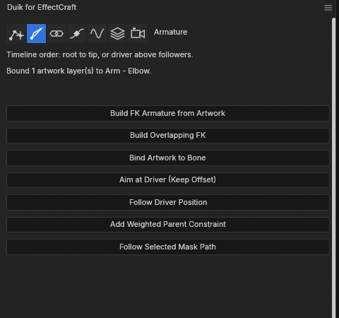
| Button | Select first | Result |
|---|---|---|
| Build FK Armature from Artwork | 2+ unparented 2D art layers with static transforms, root to tip. | A bone null at each pivot, chained; art bound in place. Animate bone Rotation. |
| Build Overlapping FK | Same, 2–16 layers. | Animate root Rotation. Delay Frames = lag per joint; Overlap Amount 0 (stiff) to 100 (full lag). See Guide 2. |
| Bind Artwork to Bone | A bone null, then an unparented static art layer below it. | Art is parented to the bone without moving. |
| Aim at Driver (Keep Offset) | A uniquely named driver at the top, then followers. | Follower Rotation points at the driver, keeping its starting angle. |
| Follow Driver Position | Same. | Follower Position moves with the driver, keeping its offset. |
| Add Weighted Parent Constraint | Driver on top, then followers, at the setup frame. | Key Parent Weight: 0 = own animation, 100 = follow the driver's Position and Rotation. One driver; no scale. |
| Follow Selected Mask Path | Mask layer on top, followers, and exactly one Mask Path property. | Key Path Progress 0–100; Orient to Path adds the tangent angle. Shape paths aren't supported. |
Followers need no keys or expressions on the property being driven.
Constraints
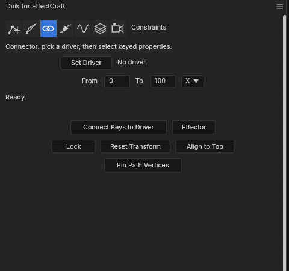
| Button | Select first | Result |
|---|---|---|
| Set Driver | One property: Position, X/Y Position, Rotation, Scale, Opacity, Anchor Point, or an effect control. | Stored as the driver. Vectors use the axis dropdown. |
| Connect Keys to Driver | Properties with 2+ keys and no expressions. | Driver at From = first key; at To = last key; clamped outside. See Guide 3. |
| Effector | Properties with 2+ keys. | An Effector null: inside Inner Radius = last key, beyond Outer Radius = first key. |
| Lock | Properties. | An expression holds the current value. Not the timeline layer lock. |
| Reset Transform | Layers. | Rotation 0, Scale 100%, and Position 0 if parented. Keyed properties get a key. |
| Align to Top | Layers; the target highest. | Moves the others to the top layer's anchor, parent-aware. |
| Pin Path Vertices | One unkeyed Mask Path or shape Path. | A pin null per vertex plus In/Out handle nulls. Move pins to deform. Puppet pins aren't scriptable in EffectCraft. |
Animation
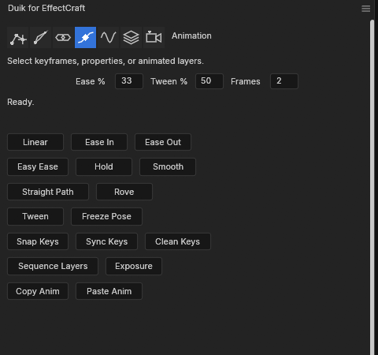
Interpolation buttons need selected keyframes. Other tools use selected keyed properties, or every animated property of the selected layers if no property is selected.
| Button | What it does |
|---|---|
| Linear · Ease In · Ease Out · Easy Ease · Hold · Smooth | Sets temporal interpolation. Ease % sets influence. |
| Straight Path | Removes spatial tangents on selected Position keys. |
| Rove | Makes inner spatial keys rove in time. |
| Tween | Adds a key at the playhead, Tween % between the surrounding keys (50 = midpoint). |
| Freeze Pose | Copies the previous key to the playhead. |
| Snap Keys | Moves keys onto whole frames. |
| Sync Keys | Shifts each property's selected keys so the first lands on the playhead. |
| Clean Keys | Removes keys that repeat both neighbours. |
| Sequence Layers | Offsets selected layers by Frames, in timeline order. |
| Exposure | Holds each pose for Frames frames (animating on 2s, 3s…). |
| Copy Anim · Paste Anim | Copies animation relative to the playhead; pastes onto matching properties of selected layers. Lasts while the panel is open. |
Automation
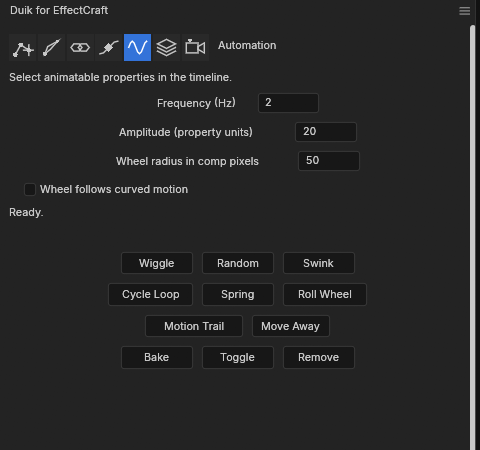
Select numeric properties, not property groups. These tools never overwrite an existing expression.
| Button | What it does |
|---|---|
| Wiggle | Continuous noise from the frequency and amplitude fields. |
| Random | A new random offset per dimension at each tick. |
| Swink | Swings around the value, or blinks between two values with Swink Blink. |
| Spring | Damped overshoot after each key, scaled by incoming speed. Controls are shared per layer. |
| Cycle Loop | Repeats 2+ keys before the first and after the last. |
| Roll Wheel | One unparented 2D wheel, anchor centred. Enter the radius in comp pixels. Horizontal travel turns it; Wheel follows curved motion uses path length (slower on long comps). |
| Motion Trail | A shape layer drawing recent motion; Trail Frames 2–240. |
| Move Away | A slider that pushes parented layers away from their parent's anchor. |
| Bake | Replaces expressions with per-frame linear keys, dropping redundant ones. |
| Toggle · Remove | Enables/disables or deletes expressions. With no expression property selected, acts on all of the selected layers. |
Bake and Remove destroy the live rig. Duplicate the composition first if you may want to edit it later.
Layers
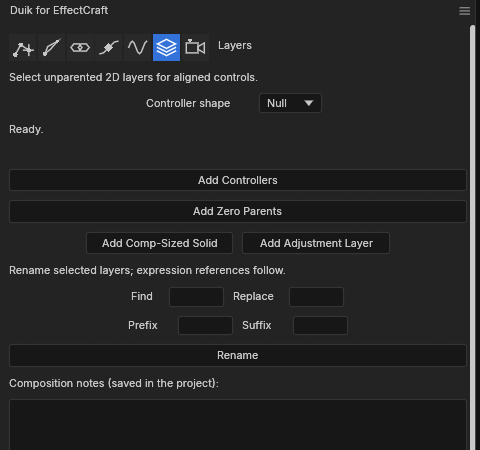
| Button | What it does |
|---|---|
| Add Controllers | One controller per selected unparented 2D layer, at its Position (or one at comp centre). Controller shape: Null, Circle, Square, Cross, or Arrows. Doesn't bind the art. |
| Add Zero Parents | A parent null at each layer's pivot; the art stays put and its local Position becomes 0. |
| Add Comp-Sized Solid · Add Adjustment Layer | Creates native EffectCraft layers. |
| Rename | Find/Replace, Prefix, Suffix. Rejects duplicates and updates layer("…") references and rig data, so rigs keep working. |
| Save Notes · Load Notes | Stores the text box in the composition comment and reads it back. |
Camera
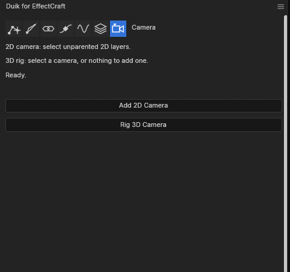
| Button | Select first | Result |
|---|---|---|
| Add 2D Camera | Unparented 2D layers. | A 2D Camera null with Position, Rotation, Zoom. Each layer gets Camera Depth (100 full, 50 half, 0 fixed). See Guide 4. |
| Rig 3D Camera | An unparented camera with static Position and Point of Interest, or nothing. | Camera Root moves/orbits, Camera Body places, Camera Target aims. |
Help
Troubleshooting
The panel isn't in the Window menu.
Install with Install Effect Plug-in Bundle (Folder)… and pick the plug-in folder, not the .jsx file. See Install.
I click a button and nothing happens.
Read the status line under the buttons. Open a composition first. Check whether the tool wants layers, a property, or keyframes selected (key idea 2).
The rig won't build.
Check timeline order, unique names, and that the layers are 2D, unparented, and unlocked. Driven properties must not already have keys or expressions.
The elbow or knee bends the wrong way.
On an IK/FK rig, tick Flip IK Bend. On a plain two-bone IK rig, rebuild with the joint on the intended side.
The limb stops short of the target.
The target is beyond reach. Move it closer or turn on Stretch IK. If you changed pivots, artwork, or scale after building, rebuild in the corrected rest pose.
Moving the controller doesn't move the artwork.
Check that the art is bound to the right bone (Parent & Link column). On an IK/FK target, check Use FK: in FK mode, target Position does nothing.
A rig broke after I renamed a layer.
Restore the old name or fix the expression references. Use Layers → Rename for future renames. Don't rename generated effect controls.
I can pin a shape path but not follow it.
Pin Path Vertices accepts mask or shape paths. Follow Selected Mask Path accepts mask paths only.
I reinstalled but still get the old panel.
EffectCraft won't overwrite an installed panel. Delete the old copy from %APPDATA%\EffectCraft\Scripts\ScriptUI Panels, restart, and install again.
What's not included
This panel recreates selected Duik workflows. It is not a full Duik port. Not included:
- Full-character autorig, 3D limb rigging, walk and run cycles.
- Multi-parent constraints with pose-preserving switches, scale inheritance.
- Importing Duik rigs from After Effects projects, or
.ffxpresets. - Puppet pins and time remapping (not exposed to EffectCraft scripts).
See the parity tracker for full coverage, and the README for build and test commands.